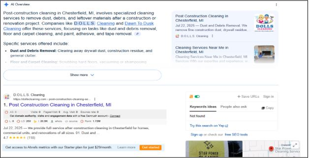
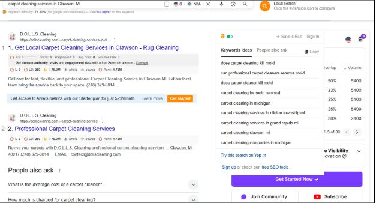
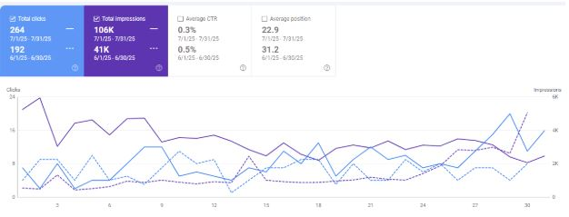

The Outcome: Local Market Domination & 106K Impressions
At 321Groww I led local SEO for D.O.L.L.S. Cleaning, targeting residential and commercial cleaning searches across Clawson and Chesterfield, MI. Organic search clicks jumped from 192 in June to 264 in July (+37.5%), impressions surged to 106,000, and Google's AI Overview began naming them for post-construction cleaning in Chesterfield, MI.
- Secured concurrent #1 and #2 organic positions for high-intent queries like "carpet cleaning services in Clawson, MI".
- Named in Google's AI Overview for "post construction cleaning in Chesterfield, MI".
- Monthly organic clicks rose from 192 (June 2025) to 264 (July 2025), with impressions up from 41K to 106K.
- Average position improved from 31.2 to 22.9 between June and July 2025 in Search Console.
The Challenge: Weak Local Maps Presence, No Geo-Targeting & Directory Domination
Despite providing top-tier residential and commercial cleaning services, D.O.L.L.S. Cleaning was virtually invisible on Google search, with an underused Google Business Profile and no service-area pages, so directories took the local searches.
- Generic Single-Page Service Structure: All services were lumped into one generic page, preventing Google from understanding geographical relevance or city-specific intent.
- Disjointed Google Business Profile Signals: NAP citations and service categories were misaligned between the GBP and website landing pages.
- Zero Answer-Engine / AI Optimization: The website had no structured local business schema, leaving it absent from modern AI Overviews.
- Aggregator Domination: Yelp and Angie's List dominated the SERP, pushing independent operators below the fold.
The Strategy: 4-Phase Hyper-Local Geo-Silo & AI Overview Optimization
Implemented a focused local authority blueprint combining dedicated city-service silo pages with deep schema and Google Business Profile synchronization.
Hyper-Targeted Service + City Silo Architecture
Architected dedicated landing pages for each service and municipality (e.g., Carpet Cleaning Clawson, Post Construction Cleaning Chesterfield).
- Researched hyper-local search volume across Oakland and Macomb County service territories.
- Developed unique, localized content addressing area-specific building types and cleaning requirements.
- Built localized breadcrumbs linking town landing pages back to regional category hubs.
Google Business Profile & Citation Synchronization
Aligned all digital footprint signals to build rock-solid local E-E-A-T trust with Google's local map algorithms.
- Standardized exact NAP (Name, Address, Phone) consistency across major Michigan local registries.
- Optimized GBP primary categories and secondary services with targeted localized keywords.
- Implemented geo-tagged photography and customer project showcase updates.
Answer Engine & AI Overview Content Optimization
Formulated content to answer direct commercial questions in the first 60 words, qualifying for Google AI Overviews.
- Answered pricing, square footage estimates, and process timelines with clear H2/H3 headers.
- Structured direct answers to earn the top citation in Google's generative search summaries.
- Optimized for mobile click-to-call conversions with prominent dispatch booking triggers.
LocalBusiness & Service JSON-LD Structured Data
Implemented schema markup giving Google direct machine-readable proof of service areas, hours, and business licensing.
- Deployed LocalBusiness, CleaningService, GeoCoordinates, and PostalAddress microdata.
- Linked Google Business Profile CID directly into the website's sameAs entity schema.
- Monitored GSC local performance reports to track impression spikes and click conversion rates.
Before vs After Reality Matrix
Direct comparison of metrics before and after the local SEO overhaul.
| Performance Dimension | Before (June Baseline) | After (July After Fixes) | Growth Delta |
|---|---|---|---|
| Monthly Search Clicks | 192 clicks (June baseline) | 264 clicks (July final) | +37.5% Clicks Growth |
| Monthly Search Impressions | 41,000 impressions | 106,000 impressions | +158% Local Discovery |
| Average Google Position | 31.2 Average SERP Position | 22.9 average position | +8.3 Positions Up |
Verified Search Console & SERP Proof
Click any capture to inspect the official Google ranking captures in full resolution.



Actionable Local SEO Lessons
Service + City Architecture Wins Local
Dedicated, geo-targeted service pages answer specific consumer intent far better than a single generic services page.
AI Overviews Favor Citation Clarity
Direct answers and structured local business schema enable Google's AI Overview to cite the business by name for free estimate searches.
Organic Rank Builds Compounding Equity
Unlike Google Local Services Ads where lead costs keep rising, top organic positions generate high-margin calls month after month.